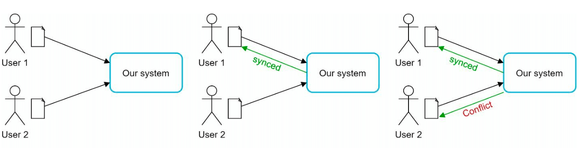
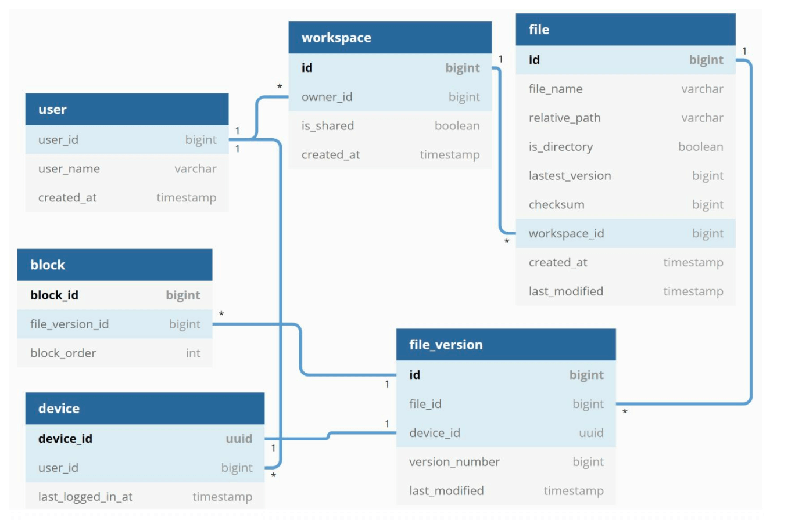

Chapter 15: Design Google Drive
Introduction
Google Drive is a cloud-based file storage and synchronization service that allows users to store, access, and share files from various devices. This chapter discusses designing a scalable system with the following features:
- File Upload and Download
- File Sync Across Devices
- File Sharing
- File Revision History
- Notifications for Edits, Deletes, and Shares
Step 1: Understanding the Problem
Key Requirements
Functional Requirements:
- Upload and download files.
- Sync files across multiple devices.
- Maintain file revisions.
- Enable file sharing with permissions.
- Send notifications on file edits, deletions, and shares.
Non-Functional Requirements:
- Reliability: Data loss is unacceptable.
- Fast Sync Speed: Avoid user impatience with delayed syncing.
- Bandwidth Efficiency: Minimize unnecessary data usage.
- Scalability: Handle 10 million daily active users (DAU).
- High Availability: Operate seamlessly during server failures or network issues.
Constraints and Assumptions
- Users get 10 GB free space.
- Maximum file size: 10 GB.
- Average file upload size: 500 KB.
- Upload frequency: 2 files per day per user.
- Total storage required: 500 PB.
Step 2: High-Level Design
Single-Server Setup
A basic setup includes:
1. Web Server: Handles uploads and downloads.
2. Metadata Database: to keep track of metadata like user data, login info, files info/
3. Storage Directory: Holds files organized by namespaces.

- A web server and a directory called drive/ is set up as the root directory to store uploaded files.
- Under drive/ directory, there is a list of directories called namespaces.
- Each namespace contains all the uploaded files for that user.
- Each file or folder can be uniquely identified by joining the namespace and the relative path.
This design serves as a starting point but is inadequate for scaling.
APIs
1. Upload a file to Google Drive: Two types of uploads are supported
- Simple upload: Used when file size is small.
- Resumable upload:
- Endpoint: https://api.example.com/files/upload?uploadType=resumable
- Send the initial request to retrieve the resumable URL.
- Upload the data and monitor upload state
- If upload is disturbed, resume the upload.
- Endpoint: https://api.example.com/files/download
- Endpoint: https://api.example.com/files/list_revisions
2. Download a file from Google Drive: To download a file
3. Get file revisions:
Moving to Distributed Systems
Improvements:
1. Sharding: Split storage across servers based on user_id.
2. Amazon S3: Use S3 for scalable and redundant file storage with cross-region replication.

3. Load Balancer: Distribute traffic across multiple web servers.
4. Metadata Database Replication: Ensure availability through database sharding and replication.
Sync Conflicts:
For a large storage system like Google Drive, sync conflicts happen from time to time.
When two users modify the same file or folder at the same time, a conflict happens.

- In the example user 1 and user 2 tries to update the same file at the same time, but user 1’s file is processed by our system first.
- User 1’s update operation goes through, but, user 2 gets a sync conflict.
- The system presents both copies of the same file: user 2’s local copy and the latest version from the server.
- User 2 has the option to merge both files or override one version with the other.
Improved design

1. User Interaction:: Users access the application via browser or mobile app.
2. Block Servers:
- Files are split into 4 MB blocks (maximum size) and assigned unique hash values.
- Blocks are stored independently in cloud storage (e.g., Amazon S3).
- File reconstruction involves joining blocks in a specific order.
3. Cloud Storage: Blocks are stored in cloud storage for scalability and redundancy.
4. Cold Storage: Inactive files are moved to cold storage to reduce costs.
5. Load Balancer: Distributes requests evenly among API servers to ensure efficient operation.
6. API Servers:
- Handle user authentication, profile management, and file metadata updates.
- Manage all non-uploading workflows.
7. Metadata Database and Cache:
- Stores metadata for users, files, blocks, and versions.
- Frequently accessed metadata is cached for faster retrieval.
8. Notification Service:
- A publisher/subscriber system that notifies clients about file changes (add, edit, delete).
- Ensures clients can pull the latest updates.
9. Offline Backup Queue: Temporarily stores file change information for offline clients to sync when back online.
Step 3: Design Deep Dive
Metadata Database
A highly simplified is shown below version as it only includes the most important tables and fields.
Schema Design:
- User Table: Stores user profiles and preferences.
- File Table: Maintains file metadata (e.g., size, name, path).
- Block Table: Tracks file blocks for reconstructing files.
- File Version Table: Stores file revision history.

File Upload Flow
1. File Upload:
- File is split into blocks, compressed, and encrypted by the block server.
- Blocks are uploaded to block servers and stored in S3.
- Client sends metadata to the API server.
- Metadata is stored in the database with status
pending. - S3 triggers a callback to update the file status to
uploaded. - Notification service informs relevant users.
2. Metadata Upload:
3. Completion:

File Sync
1. Delta Sync: Transfer only modified blocks instead of the entire file.

2. Compression: Blocks are compressed using compression algorithms depending on file types.
3. Conflict Resolution:
- First processed version wins.
- Conflicting versions are saved separately for user resolution.

File Download Flow
Download flow is triggered when a file is added or edited elsewhere. There are two ways a client can know:
- If client A is online while a file is changed by another client, notification service will inform client A.
- If client A is offline while a file is changed by another client, data will be saved to the cache. When the offline client is online again, it pulls the latest changes.
Once a client knows a file is changed, it first requests metadata via API servers, then
downloads blocks to construct the file.
1. Trigger: Notification service informs the client of file updates.
2. Metadata Fetch: Client retrieves updated metadata via API.
3. Block Download: Client downloads updated blocks from block servers and reconstructs the file.

Notification Service
1. Purpose: Keeps clients updated about file changes.
2. Mechanism: Implements long polling for asynchronous notifications.
3. Example: When a file is added, edited, or deleted, notifications are pushed to all relevant clients.
Storage Optimization
1. De-duplication: Remove duplicate blocks at the account level using hash-based comparisons.
2. Versioning Strategy:
- Limit the number of saved revisions.
- Prioritize recent versions for frequently edited files.
3. Cold Storage: Move rarely accessed files to cheaper storage solutions (e.g., Amazon S3 Glacier).
Failure Handling
1. Load Balancer Failure: Secondary load balancer becomes active.
2. Block Server Failure: Pending tasks are reassigned to other servers.
3. Metadata Database Failure:
- Promote a slave node to master.
- Redirect traffic to remaining replicas.
4. Cloud Storage Failure: Use cross-region replication to fetch unavailable files.
5. Notification Service Failure: Clients reconnect to alternative servers.